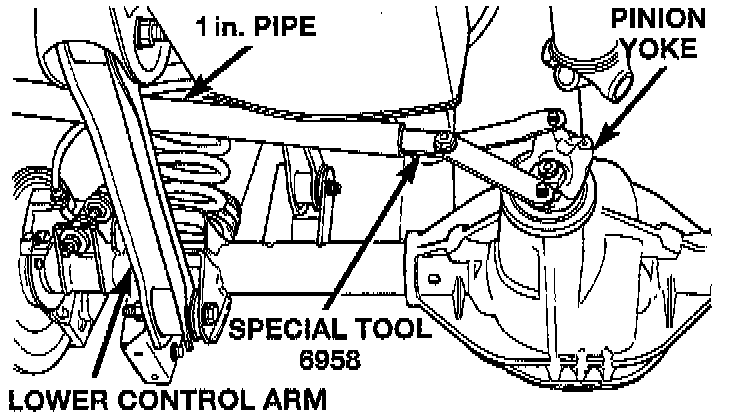
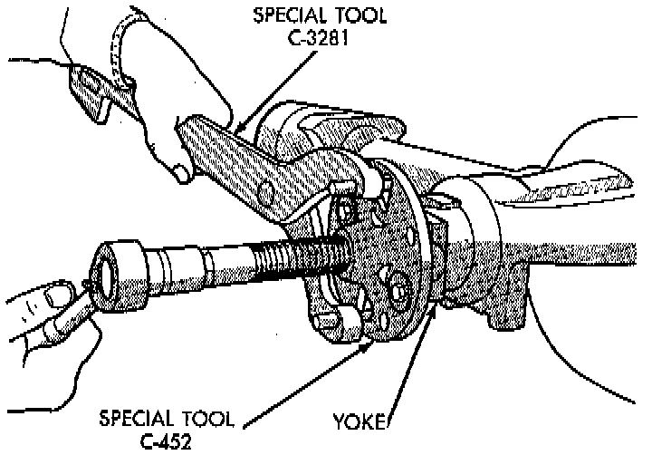
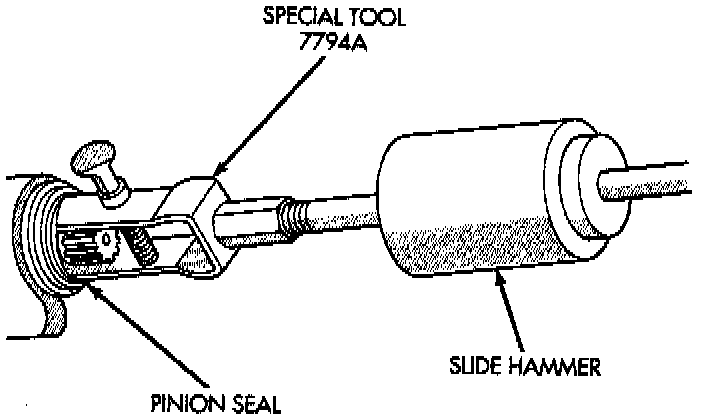
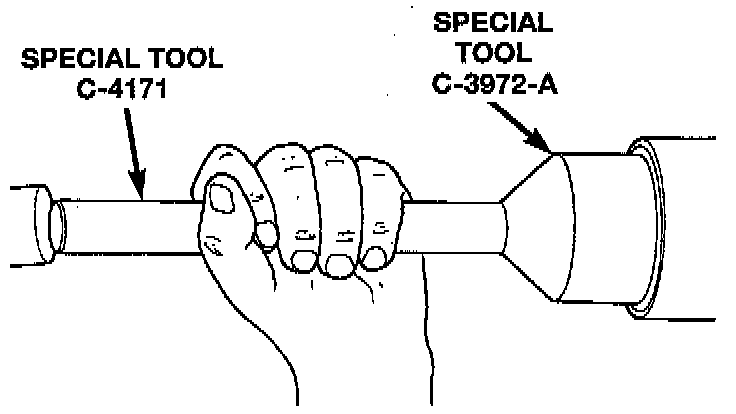
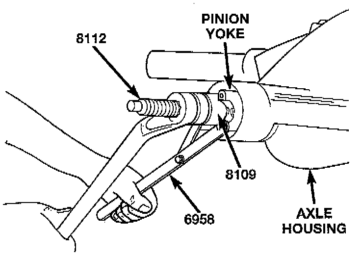
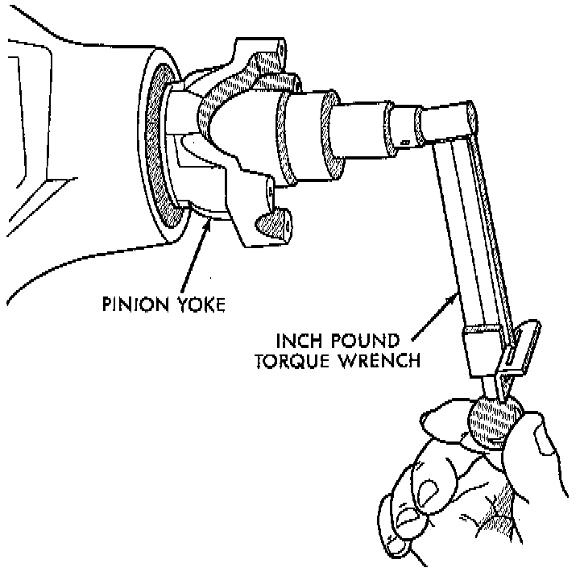
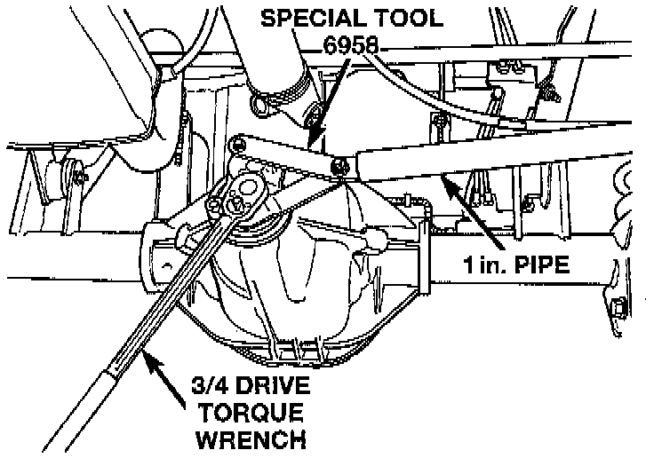

Rear Axle - 194RBI
REMOVAL1. Raise and support the vehicle.
2. Remove wheel and tire assemblies.
3. Remove the brake drums.
4. Mark the propeller shaft and pinion yoke for installation alignment reference.
5. Remove the propeller shaft from the yoke.
6. Rotate the pinion gear three or four times.
7. Measure the amount of torque necessary to rotate the pinion gear with a (inch lbs.) dial-type torque wrench. Record the torque reading for installation reference.

8. Using Holder 6958, or equivalent to hold the pinion yoke, remove the pinion nut and washer.

9. Use Remover C-452 and Wrench C-3281, or equivalents to remove the pinion yoke.

10. Use a suitable pry tool or slide hammer mounted screw to remove the pinion gear seal.

INSTALLATION
1. Apply a light coating of gear lubricant on the lip of pinion seal. Install seal with Installer C-3972-A and Handle C-4171, or equivalents.

2. Install yoke on the pinion gear with Screw 8112, Cup 8109, and Holder 6958, or equivalents.
CAUTION: Do not exceed the minimum tightening torque when installing the pinion yoke at this point. Damage to the collapsible spacer or bearings may result.
3. Install the yoke washer and a new nut on the pinion gear and tighten the pinion nut until there is zero bearing end-play.
4. Tighten the nut to 271 Nm (200 ft. lbs.).
CAUTION: Never loosen pinion gear nut to decrease pinion gear bearing rotating torque and never exceed specified preload torque. If preload torque or rotating torque is exceeded a new collapsible spacer must be installed. The torque sequence will then have to be repeated.

5. Rotate the pinion shaft using a (inch lbs.) torque wrench. Rotating torque should be equal to the reading recorded during removal plus an additional 0.56 Nm (5 inch lbs.).

6. If the rotating torque is low, use Holder 6958, or equivalent to hold the pinion yoke, and tighten the pinion shaft nut in 6.8 Nm (60 inch lbs.) increments until the proper rotating torque is achieved.
CAUTION: If the maximum tightening torque is reached prior to reaching the required rotating torque, the collapsible spacer may have been damaged. Replace the collapsible spacer.
7. Align the installation reference marks on the propeller shaft and yoke and install the propeller shaft.
8. Add gear lubricant to the differential housing if necessary.
9. Install the brake drums.
10. Install wheel and tire assemblies.
11. Lower the vehicle.